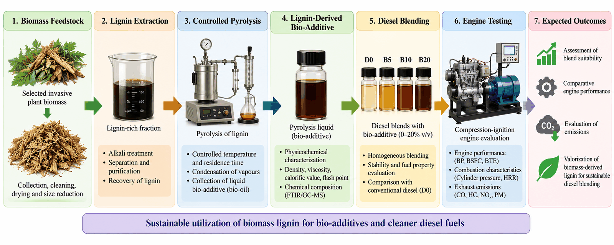
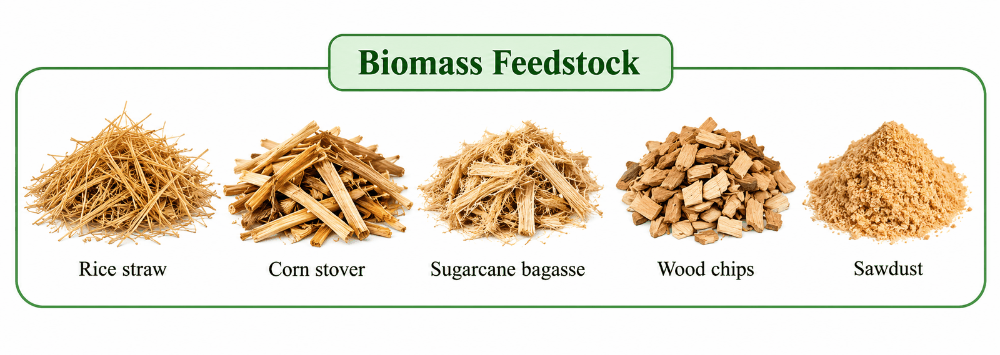
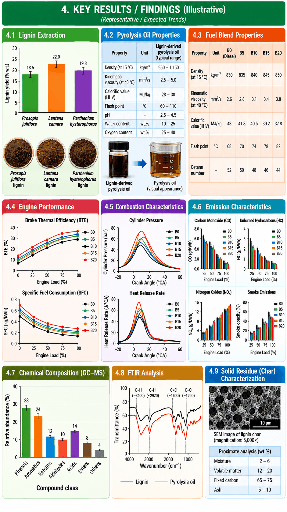

A
The challenge
Diesel engines depend on petroleum-based fuels. Alternative components require careful assessment of physicochemical properties, compatibility, combustion and emissions.
An experimental research project exploring lignin extraction, controlled pyrolysis, bio-additive characterization, diesel blending and compression-ignition engine evaluation.

Lignin is a carbon-rich aromatic component of plant biomass. This project will investigate whether lignin-derived pyrolysis liquid can be assessed as a bio-additive in diesel blends, with suitability determined through fuel-property and engine testing.
Diesel engines depend on petroleum-based fuels. Alternative components require careful assessment of physicochemical properties, compatibility, combustion and emissions.
Connect lignin extraction and controlled pyrolysis with liquid-product characterization, selected diesel-blend preparation and comparative CI-engine evaluation.
Explore a value-added use for biomass-derived lignin while making no assumptions about engine benefits before experimental evidence is available.
Four concise objectives guide the planned experimental work.
To extract lignin from suitable biomass using an appropriate extraction method.
To derive bio-additives from lignin through pyrolysis reactions under controlled conditions.
To evaluate the physical and chemical properties of bio-additive blends with diesel at different dosage levels.
To investigate the suitability of the prepared blends for use in a compression-ignition (CI) engine.
The sequence below summarizes the proposed research framework; operational details should match the team's approved laboratory protocol.
These illustrations help explain the feedstock concept and process. Replace generic biomass examples with the actual selected feedstock, and use measured data for any final results charts.



This page currently documents the planned research. Quantitative findings will be added only when measurements and data analysis are available.
Planned measures: density, viscosity, calorific value, flash point and chemical composition.
Planned measures: brake thermal efficiency, specific fuel consumption, cylinder pressure, heat release rate and ignition delay.
Planned measures: carbon monoxide (CO), unburned hydrocarbons (HC), nitrogen oxides (NOx) and smoke.
Kalasalingam Academy of Research and Education (KARE), Krishnankoil, Tamil Nadu, India.
First-year student · Department of Mechanical Engineering
9926009061@klu.ac.inFirst-year student · Department of Electrical and Electronics Engineering (EEE)
9926006025@klu.ac.inPublic contact details are displayed as provided by the team. Confirm all addresses and obtain permission before publishing personal or institutional contact information publicly.
Background literature on lignin pyrolysis and bio-oil assessment.
Verify every citation against the original publication before formal submission.
The team acknowledges Kalasalingam Academy of Research and Education (KARE) for institutional support and expresses gratitude to Dr. S. Gowthaman for guidance and encouragement.